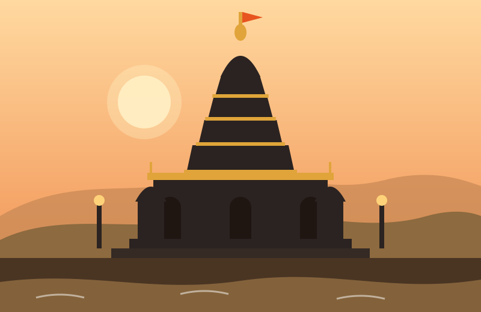

Ashtavinayak Darshan
Explore the Divine Maharashtra
Walk the sacred path of the eight self-manifested Ganesha temples around Pune. Read their stories in English, मराठी or हिंदी, plan your yatra and travel with confidence.
What is the Ashtavinayak Yatra?
Ashtavinayak means “eight Vinayaks”, the eight Ganesha temples of Maharashtra. Devotees believe that the idol at each temple appeared on its own, and a pilgrimage to all eight is considered deeply auspicious.
The temples lie in Pune, Raigad and Ahilyanagar districts. By tradition the yatra begins at Morgaon and ends there too, visiting the temples in a fixed order.
The Eight Temples
Follow the traditional order of the yatra.
Interesting Facts
- All eight temples are in Maharashtra, spread across three districts: Pune, Raigad and Ahilyanagar.
- Tradition says the yatra should begin at Morgaon and end at Morgaon, completing a full circle.
- Siddhatek is known as the Ashtavinayak temple whose idol has its trunk turned to the right.
- Lenyadri is the only Ashtavinayak temple carved inside a cave, on a hill near Junnar.
- The full circuit is roughly 650–700 km by road and is usually done in two to three days.
Travel Highlights
Best time to visit
October to February is cool and comfortable. The monsoon is green and beautiful, but roads and hill steps can be slippery.
How many days
Two to three days by car is comfortable. Starting early each morning avoids the longest queues.
Travel by
Car or taxi gives the most freedom. State transport buses reach most villages, but plan extra time for connections.
Avoid the rush
Weekends, Chaturthi days and festival weeks are very crowded. Weekday mornings are calmer.
Ready to begin your yatra?
Choose your temples, your starting city and the number of days. We will prepare a day-wise plan.
Plan Your Journey